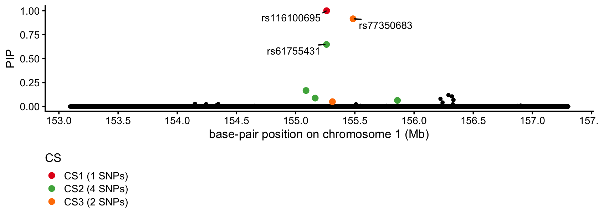

Last updated: 2025-10-12
Checks: 7 0
Knit directory: Improved_LD_SuSiE/
This reproducible R Markdown analysis was created with workflowr (version 1.7.1). The Checks tab describes the reproducibility checks that were applied when the results were created. The Past versions tab lists the development history.
Great! Since the R Markdown file has been committed to the Git repository, you know the exact version of the code that produced these results.
Great job! The global environment was empty. Objects defined in the global environment can affect the analysis in your R Markdown file in unknown ways. For reproduciblity it’s best to always run the code in an empty environment.
The command set.seed(20250821) was run prior to running
the code in the R Markdown file. Setting a seed ensures that any results
that rely on randomness, e.g. subsampling or permutations, are
reproducible.
Great job! Recording the operating system, R version, and package versions is critical for reproducibility.
Nice! There were no cached chunks for this analysis, so you can be confident that you successfully produced the results during this run.
Great job! Using relative paths to the files within your workflowr project makes it easier to run your code on other machines.
Great! You are using Git for version control. Tracking code development and connecting the code version to the results is critical for reproducibility.
The results in this page were generated with repository version 7f64b63. See the Past versions tab to see a history of the changes made to the R Markdown and HTML files.
Note that you need to be careful to ensure that all relevant files for
the analysis have been committed to Git prior to generating the results
(you can use wflow_publish or
wflow_git_commit). workflowr only checks the R Markdown
file, but you know if there are other scripts or data files that it
depends on. Below is the status of the Git repository when the results
were generated:
Untracked files:
Untracked: data/bloodcells_chr1.153094636.157301801.matrix.gz
Untracked: data/bloodcells_chr1.153094636.157301801.z.rds
Note that any generated files, e.g. HTML, png, CSS, etc., are not included in this status report because it is ok for generated content to have uncommitted changes.
These are the previous versions of the repository in which changes were
made to the R Markdown (analysis/susie_rss_ukbb.Rmd) and
HTML (docs/susie_rss_ukbb.html) files. If you’ve configured
a remote Git repository (see ?wflow_git_remote), click on
the hyperlinks in the table below to view the files as they were in that
past version.
| File | Version | Author | Date | Message |
|---|---|---|---|---|
| Rmd | 7f64b63 | Peter Carbonetto | 2025-10-12 | wflow_publish("analysis/susie_rss_ukbb.Rmd", view = F, verbose = T) |
| Rmd | b9ed7b4 | Peter Carbonetto | 2025-10-12 | Working on the susie_rss_ukbb demo. |
| html | 26e7b47 | Peter Carbonetto | 2025-10-12 | First build of the susie_rss_ukbb workflowr page. |
| Rmd | 2c643c9 | Peter Carbonetto | 2025-10-12 | wflow_publish("analysis/susie_rss_ukbb.Rmd", view = T, verbose = T) |
| Rmd | 110e9ae | Peter Carbonetto | 2025-10-12 | wflow_publish("analysis/index.Rmd") |
This is an illustration of using SuSiE-RSS to finemap a blood cell trait, reticulocyte percentage, using summary statistics from a PLINK association analysis of the UK Biobank data. Here we focus on a region on chromosome 1 near the gene PKLR which is known to contain a rare missense variant rs116100695 causing red cell pyruvate kinase deficiency (see Astle et al, Cell, 2016 and the OMIM entry).
To run this analysis, you will first need to download the association statistics from the UK Biobank data and the LD matrix. Download these two files from the Box folder and move them into the “data” directory of this repository:
bloodcells_chr1.153094636.157301801.z.rds
bloodcells_chr1.153094636.157301801.matrix.gzLoad the packages needed for this analysis:
library(data.table)
library(susieR)
library(ggplot2)
library(ggrepel)
library(cowplot)Set the seed for reproducibility:
set.seed(1)Get the z-scores:
dat <- readRDS("data/bloodcells_chr1.153094636.157301801.z.rds")
n <- dat$n
z <- dat$Z[,"Reticulocyte_perc"]
pos <- dat$pos$POS/1e6
ids <- dat$pos$ID
names(z) <- idsImport the “in-sample” LD matrix:
R <- fread("data/bloodcells_chr1.153094636.157301801.matrix.gz",
sep = " ",verbose = FALSE)
R <- as.matrix(R)
rownames(R) <- ids
colnames(R) <- idsRun SuSiE-RSS with at most 5 “single effects” (i.e., causal SNPs):
fit <- susie_rss(z,R,n,L = 5,min_abs_corr = 0,coverage = 0.95,
max_iter = 100,verbose = TRUE)
fit$lbf
fit$V
# [1] "objective:-353173.931322825"
# [1] "objective:-353173.606429479"
# [1] "objective:-353173.597867136"
# [1] "objective:-353173.597254807"
# [1] 64.4319821 42.7729293 4.4479161 1.6243978 0.4958185
# [1] 6.160781e-04 4.377370e-04 1.180881e-04 6.350878e-05 2.699047e-05This is my custom function to visualize the PIPs and the CSs:
susie_pip_plot <-
function (fit,
max_snps = 100,
font_size = 10,
cs_colors = c("#e41a1c","#4daf4a","#ff7f00","#ffff33",
"#a65628","#f781bf","#984ea3","#377eb8")) {
cs <- fit$sets$cs
pip <- fit$pip
m <- length(cs)
pdat_cs <- NULL
for (i in 1:m) {
j <- cs[[i]]
if (length(j) < max_snps) {
x <- data.frame(cs = sprintf("CS%d (%d SNPs)",i,length(j)),
pos = pos[j],
id = "",
pip = pip[j])
k <- which.max(x$pip)
x[k,"id"] <- ids[j[k]]
pdat_cs <- rbind(pdat_cs,x)
}
}
pdat_cs <- transform(pdat_cs,cs = factor(cs))
pdat_pip <- data.frame(pip = pip,pos = pos)
return(ggplot() +
geom_point(data = pdat_pip,
mapping = aes(x = pos,y = pip),
size = 1,color = "black") +
geom_point(data = pdat_cs,
mapping = aes(x = pos,y = pip,color = cs),
size = 2) +
geom_text_repel(data = pdat_cs,
mapping = aes(x = pos,y = pip,label = id),
size = 3,min.segment.length = 0,max.overlaps = Inf) +
scale_x_continuous(breaks = seq(0,300,0.5)) +
scale_color_manual(values = cs_colors) +
labs(x = "base-pair position on chromosome 1 (Mb)",
y = "PIP",
color = "CS") +
theme_cowplot(font_size = font_size) +
theme(legend.position = "bottom",
legend.direction = "vertical"))
}This PIP plot summarizes the results of the fine-mapping analysis:
susie_pip_plot(fit)
SuSiE identified the missense variant but also identified 2 SNPs within 500 kb of PKLR with fairly high confidence.
The files bloodcells_chr1.153094636.157301801.z.rds and
bloodcells_chr1.153094636.157301801.matrix.gz were
originally downloaded from the subdirectories
regions_zscores_maf001_info6 and
regions_ld_maf001_info6 within directory
/gpfs/data/stephens-lab/finemap-uk-biobank/data/raw/BloodCells
on randi.
sessionInfo()
# R version 4.3.3 (2024-02-29)
# Platform: aarch64-apple-darwin20 (64-bit)
# Running under: macOS 15.6.1
#
# Matrix products: default
# BLAS: /Library/Frameworks/R.framework/Versions/4.3-arm64/Resources/lib/libRblas.0.dylib
# LAPACK: /Library/Frameworks/R.framework/Versions/4.3-arm64/Resources/lib/libRlapack.dylib; LAPACK version 3.11.0
#
# locale:
# [1] en_US.UTF-8/en_US.UTF-8/en_US.UTF-8/C/en_US.UTF-8/en_US.UTF-8
#
# time zone: America/Chicago
# tzcode source: internal
#
# attached base packages:
# [1] stats graphics grDevices utils datasets methods base
#
# other attached packages:
# [1] cowplot_1.1.3 ggrepel_0.9.6 ggplot2_3.5.2 susieR_0.14.22
# [5] data.table_1.17.6 workflowr_1.7.1
#
# loaded via a namespace (and not attached):
# [1] sass_0.4.10 generics_0.1.4 stringi_1.8.7
# [4] lattice_0.22-5 digest_0.6.37 magrittr_2.0.3
# [7] evaluate_1.0.4 grid_4.3.3 RColorBrewer_1.1-3
# [10] fastmap_1.2.0 R.oo_1.26.0 plyr_1.8.9
# [13] rprojroot_2.0.4 jsonlite_2.0.0 Matrix_1.6-5
# [16] R.utils_2.12.3 processx_3.8.3 whisker_0.4.1
# [19] reshape_0.8.9 ps_1.7.6 mixsqp_0.3-54
# [22] promises_1.3.3 httr_1.4.7 scales_1.4.0
# [25] jquerylib_0.1.4 cli_3.6.5 rlang_1.1.6
# [28] crayon_1.5.3 R.methodsS3_1.8.2 withr_3.0.2
# [31] cachem_1.1.0 yaml_2.3.10 parallel_4.3.3
# [34] tools_4.3.3 dplyr_1.1.4 httpuv_1.6.14
# [37] RcppZiggurat_0.1.6 Rfast_2.1.0 vctrs_0.6.5
# [40] R6_2.6.1 matrixStats_1.2.0 lifecycle_1.0.4
# [43] git2r_0.33.0 stringr_1.5.1 fs_1.6.6
# [46] irlba_2.3.5.1 pkgconfig_2.0.3 callr_3.7.5
# [49] RcppParallel_5.1.10 pillar_1.11.0 bslib_0.9.0
# [52] later_1.4.2 gtable_0.3.6 glue_1.8.0
# [55] Rcpp_1.1.0 xfun_0.52 tibble_3.3.0
# [58] tidyselect_1.2.1 rstudioapi_0.15.0 knitr_1.50
# [61] dichromat_2.0-0.1 farver_2.1.2 htmltools_0.5.8.1
# [64] labeling_0.4.3 rmarkdown_2.29 compiler_4.3.3
# [67] getPass_0.2-4